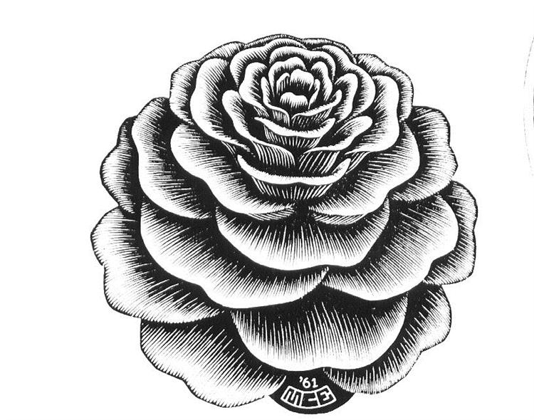

原文
この翻訳を評価してください
いただいたフィードバックは Google 翻訳の改善に役立てさせていただきます
コンテスト開始から24時間後、参加者は新たな困難に直面します。この課題説明の補足資料では、この困難について概説します。
あ最初の日が過ぎ、修道院に深い夜が訪れると、ウィリアムとアドソは再び迷宮へと忍び込んだ。ランタンの灯りが長い影を落とし、揺らめく薄明かりの中で、彼らは図書館が以前よりも巧妙に彼らを欺いていたことに気づいた。
見慣れた部屋と思われたものは、実は同じ部屋ではなく、双子の部屋だった。鏡張りのホールと二重の部屋、映し出されたものが重なり合っていた。中には二度、三度と複製されたものもあった。ウィリアムは厳粛にこう締めくくった。「この図書館は単一の平面図ではなく、重なり合う複製のタペストリーであり、目には一つ一つが区別できない！」
アドソは震え上がった。足元の石さえももはや信用できなくなっていたからだ。「一つの部屋と他の部屋が区別できないのなら、どうして正確な地図を作れるというんだ？」
ウィリアムは微笑んだ。「心配するな、アドソ。それぞれに個性を持たせよう。」
ウィリアムはアドソに木炭を携行するよう命じた。若い修道士はそれを使って、各部屋の上に書かれたラベルを書き換え、探索を容易にすることができた。ルート計画では、このような落書きは角括弧で囲んで示されている。つまり、ルート計画は次のように記されている。
2[3]12[0]
2、次に現在の部屋のラベルを に変更し3、次にドア を通過し1、次にドアを通過し2、最後にその部屋のラベルを に置き換えるように指示します0。
これらのラベル番号は、常に2ビットの数字（0- 3）という修道院の暗号の範囲内に収められなければならない。彼らが再びその部屋に戻れば、ラベルは書き換えられ、彼ら自身の印が彼らを見つめているのに気づくだろう。しかし、ルートプランが終わると、用心深い司書アロンゾはすべての標識を元の状態に戻す。まるで木炭の筆致が石に触れたことなどなかったかのように。
しかし、アロンゾの監視はますます鋭くなっていた。彼の疑いを逃れるため、ウィリアムとアドソはより慎重に行動せざるを得なくなった。それぞれのルート計画では、脱出するまでに最大6n段のドアしか通れない（nは部屋の数）。それ以上歩き回れば、司書の目に留まってしまうのは確実だ。

Taleph(ℵ)、 (ℶ) などのラベルが付いた問題は、木炭でマークを付けないと正しくマッピングできません。これは、これらの問題が 2 つ、あるいは 3 つのコピーで構成され、bethそれらを区別できないためです。一方、元のライトニング ラウンド問題 (などのラベルが付いて) では、木炭でマークを付けなくてもすべての部屋を区別できました。primussecundus
これまでと同様に、解答が図書館の実際の配置と等価である場合、解答は「正解」とマークされます。等価性は、これまでと同様に、経路図に関して区別がつかないことと定義されます。ただし、今後は「経路図」に木炭で印を付けることが含まれる場合があります。